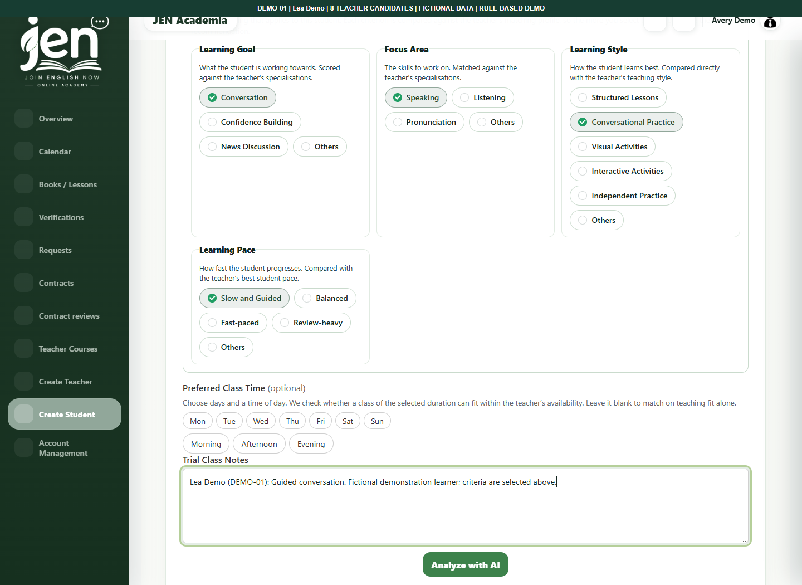
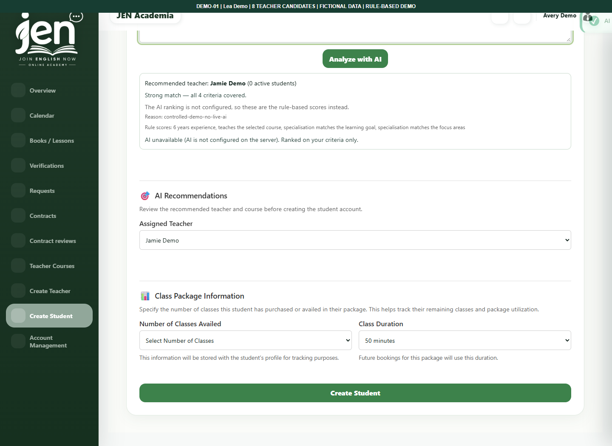
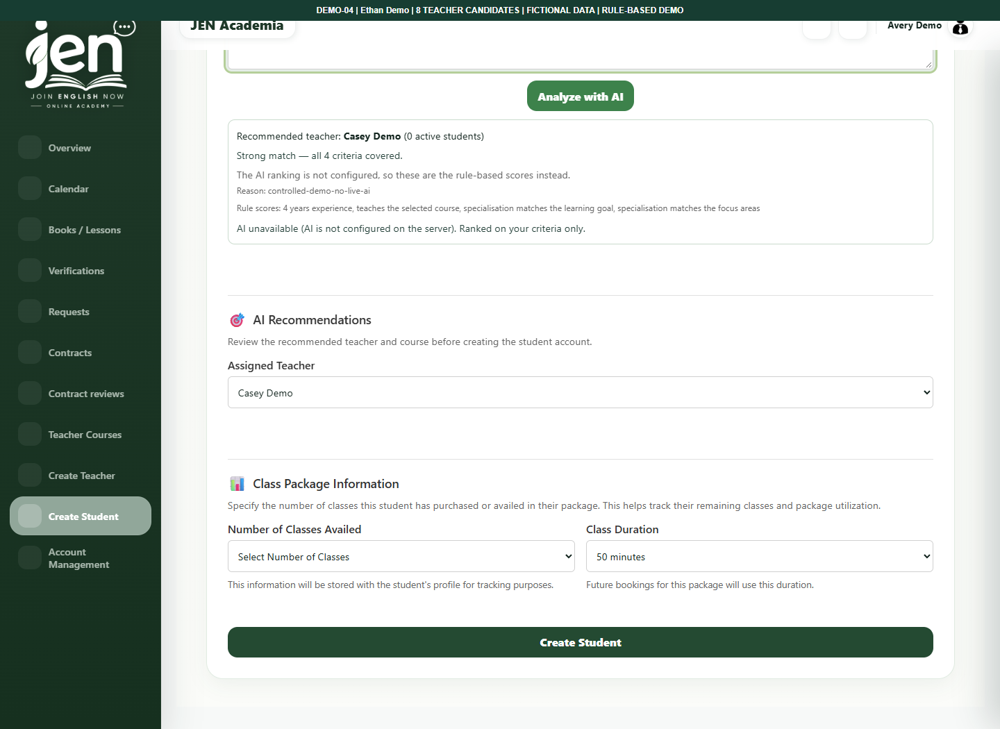

AI Teacher Matching User Manual
JEN Academia
Follow the examples below to request a teacher recommendation and understand the result you should see.
The named examples use the prepared eight-teacher sample set shown in the screenshots. Ask the school administrator to confirm that this sample set is available on your site before comparing teacher names.
The sample teacher accounts and all five learner examples are listed in the reference tables at the end of this manual.
Open the JEN Academia website and sign in using the account provided by the school. From the administrator menu, select Create Student.
If Create Student is not available in your account, ask the school administrator to assist you.
Choose Conversational English. For these examples, leave Level Evaluation unscored and Preferred Class Time blank. Leave Assigned Teacher at Select Teacher.
Start with a learner who wants conversation practice and needs a slower pace. Under Matching Criteria, select only these choices:
Learning Goal: Conversation (may be labeled Conversational English).
Focus Area: Speaking.
Learning Style: Conversational Practice.
Learning Pace: Slow and Guided (may be labeled Guided Pace).
Leave Trial Class Notes empty for this first example. Clear any other selected choices.

Leave Assigned Teacher at Select Teacher to request a recommendation. Click Analyze with AI and wait for the result.
The system compares the learner’s needs with the available teacher profiles and displays a recommended teacher with an explanation.
With the prepared sample profiles in rule-based mode, the recommendation is Jamie Demo with a Strong match and 4 of 4 criteria covered. Jamie teaches speaking and conversation, uses a conversational style, and supports a slow pace.
The result should agree with all four choices you selected. If live AI recommends another teacher, review whether that teacher’s profile and explanation support the same needs; the name alone does not establish whether the AI worked.

Read the teacher’s name, matching explanation and any warnings. A strong match covers all selected categories. A partial or weak match means some preferences are not covered.
The recommended teacher appears in Assigned Teacher. Keep the recommendation or choose another available teacher from the list.
If the page says AI is unavailable or not configured, this result shows rule-based matching. It does not show that live AI has processed the request.
Open a fresh Create Student page so the previous teacher is not carried over. Choose Conversational English, leave Assigned Teacher unselected, and keep the level, preferred time and notes blank.
Select Conversation as the goal, Speaking as the focus, Interactive Activities as the learning style, and Fast-paced (or Accelerated Pace) as the pace. Click Analyze with AI.
Expected result with the prepared sample profiles in rule-based mode: Casey Demo, Strong match, 4 of 4 criteria covered. Casey supports speaking through interactive activities at a fast pace. This differs from Jamie’s slow, conversational approach.

Compare the explanations in both examples. They should reflect the changed learning style and pace. Live AI may choose another suitable teacher when it provides a supported explanation.
Open another fresh Create Student page and choose Conversational English. Leave the matching choices, level and preferred time blank. Keep Assigned Teacher at Select Teacher.
In Trial Class Notes, enter: “The learner wants everyday speaking practice, prefers learning through conversation, and needs slow, guided explanations.”
Click Analyze with AI. When live AI is available, look for suggested matching choices supported by the note, such as Conversation, Speaking, Conversational Practice and a guided pace. The exact combination can vary.
The added choices should describe the learner’s needs, and the recommended teacher’s explanation should connect to those needs. Jamie Demo is a suitable reference teacher for this note in the prepared sample set, although another teacher may also be suitable.
Look separately at the note suggestions and the ranking explanation. Added choices show that the AI interpreted the note. A live AI ranking explanation shows that AI helped order the teacher recommendations. One may work while the other is unavailable.
If no choices are added, this example has not demonstrated note interpretation. If the page reports AI unavailable or not configured, ask the school administrator to check AI availability, then repeat this step.
A teacher name or a Strong match label by itself is not proof that live AI ran. Review the AI messages and explanations shown on the page.
Complete the required student information and class package details. Review the selected teacher, then click Create Student to save the account. Analyzing the match alone does not save an account or book a lesson.
For these sample walkthroughs, you can leave without saving. When enrolling an actual learner, use their real needs and information. Sign out when finished on a shared device.
Use these profiles to understand the recommendations in the walkthroughs. All eight are assigned to Conversational English in the reference sample set.
| Teacher / sample email | Specialization | Teaching style / pace | Experience / active students |
|---|---|---|---|
| Jamie Demo teacher901@example.com | speaking and conversation | Conversational / Slow and guided | 6 years / 0 |
| Taylor Demo teacher902@example.com | grammar and writing | Structured / Fast-paced | 2 years / 0 |
| Alex Demo teacher903@example.com | listening and pronunciation | Visual / Balanced | 5 years / 1 |
| Sam Demo teacher904@example.com | news discussion; speaking and conversation | Interactive / Balanced | 7 years / 0 |
| Morgan Demo teacher905@example.com | speaking and conversation | Conversational / Fast-paced | 8 years / 3 |
| Casey Demo teacher906@example.com | speaking and conversation | Interactive / Fast-paced | 4 years / 0 |
| Riley Demo teacher907@example.com | listening and pronunciation | Structured / Review-heavy | 3 years / 0 |
| Jordan Demo teacher908@example.com | reading and vocabulary | Independent / Balanced | 2 years / 1 |
Jamie supports slow conversation practice, while Casey supports faster speaking activities. Alex focuses on listening and pronunciation through visual learning. Sam combines news discussion with speaking. Riley supports structured pronunciation review.
Active students means the number of learners already assigned to the teacher. This can affect which teacher is recommended.
Sample emails identify the fictional reference accounts. Sign in with the administrator credentials supplied by the school; these entries are not login instructions. The school confirms which sample records are available on the deployed site.
For each example, choose Conversational English and start on a fresh Create Student page. Leave Assigned Teacher unselected, the level unscored, and the preferred time and notes blank. Select only the choices listed below, then click Analyze with AI.
| Learner | Goal / focus | Style / pace | Expected teacher | Coverage |
|---|---|---|---|---|
| Lea Demo | Conversation / Speaking | Conversational Practice / Slow and guided | Jamie Demo | 4/4 |
| Noah Demo | Confidence Building / Listening | Visual Learning / Balanced | Alex Demo | 3/4 |
| Mia Demo | News Discussion / Speaking | Interactive Activities / Balanced | Sam Demo | 4/4 |
| Ethan Demo | Conversation / Speaking | Interactive Activities / Fast-paced | Casey Demo | 4/4 |
| Zoe Demo | Confidence Building / Pronunciation | Structured Lessons / Review-heavy | Riley Demo | 3/4 |
These expected names and coverage counts apply to the prepared sample profiles in rule-based mode. Live AI can recommend another suitable teacher; compare the explanation with the learner’s selected needs.
Lea, Mia and Ethan have examples that cover all four matching categories. Noah and Zoe have partial matches: their suggested teachers support the chosen skill, style and pace, but do not match the Confidence Building goal through their listed specialization.
The learner names identify example profiles. You can enter their preferences in the matching page without creating duplicate student accounts.